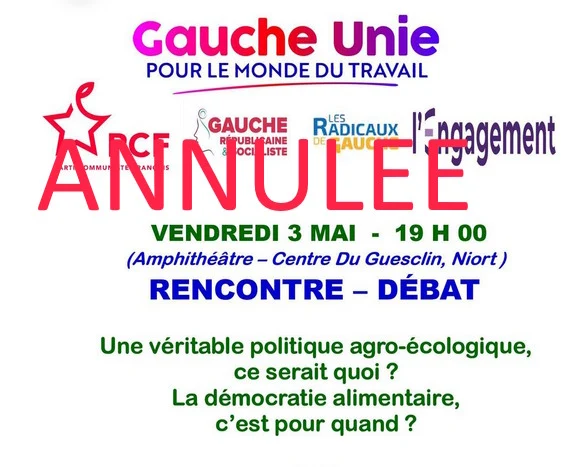

Annonce fédérale
À Niort, le débat du 3 mai sur l’agroécologie est annulé
Date indiquée par Facebook · 1 mai 2024
Repères éditoriaux
Nous avons annulé la rencontre du 3 mai prévue à l’amphithéâtre du centre Du Guesclin. L’affiche marquée « annulée » accompagne le message du 1er mai.

Sources
Archive rouge · export Facebook · AR-0002-FB-01404
À lire aussi · À Niort, le débat du 3 mai sur l’agroécologie annoncé puis annulé